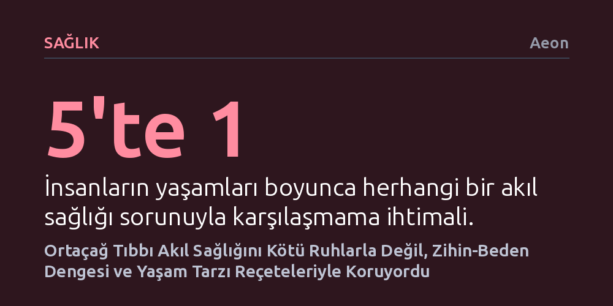

SAGLIK · Aeon · 2026-09-11
Ortaçağ tıp metinleri, sanılanın aksine akıl sağlığını şeytani güçlerle değil; beslenme, uyku, sosyal bağlar ve doğayla dengelenen bütüncül bir zihin-beden ilişkisi olarak görüyordu. Dönemin hekimleri, tükenmişlik ve melankoliye karşı ilaçlardan ziyade müzik, bahçe işleri ve neşeli dostlukları içeren koruyucu yaşam reçeteleri uyguluyordu.
Depresyon ve tükenmişliğin modern çağın bir icadı olmadığını göstererek, ortaçağın koruyucu ve bütüncül zihin-beden yaklaşımının günümüzün aşırı tıbbileştirilmiş ruh sağlığı krizine değerli alternatifler sunduğunu fark ettirir.

Tarih anlatılarında ortaçağ insanının akıl sağlığına yaklaşımı genellikle korku, batıl inanç ve acımasızlıkla özdeşleştirilir. Azizlerin hayat hikayelerinde geçen şeytan çıkarma anlatıları ya da zincire vurulmuş hastalar, o dönemin hekimlerinin zihinsel rahatsızlıklar karşısında tamamen çaresiz ve kayıtsız olduğu izlenimini yaratır. Oysa dini metinlerin gölgesinden çıkıp dönemin tıp el yazmalarına ve gündelik yaşam rehberlerine bakıldığında, şaşırtıcı derecede çağdaş ve insani bir yaklaşım karşımıza çıkar.
Ortaçağ tıp dünyası, ruhsal esenliği sağlıklı bir yaşamın merkezine yerleştirmişti. Akıl hastalıkları yalnızca metafizik bir ceza değil; zihin, beden ve çevre arasındaki etkileşimin bozulması olarak görülüyordu. Hekimler ve düşünürler, günümüzde giderek derinleşen ruh sağlığı krizimize hiç de yabancı olmayan bir kavrayışla, insanın duygusal dengesini korumayı fiziksel sağlığın ön koşulu sayıyordu.
Dönemin egemen tıp anlayışı olan hümoral sistem, insan sağlığını dört temel sıvının (kan, balgam, sarı safra ve kara safra) dengesine bağlıyordu. Bu dengeyi korumanın yolu ise 'doğal olmayanlar' olarak adlandırılan ve insanın yönetebileceği dış etkenlerden geçiyordu. Beslenme, egzersiz, uyku ve çevre koşullarının yanı sıra duyguların yönetimi de bu dış faktörlerin en kritik parçalarından biriydi.
Geç ortaçağ Avrupasında çok popüler olan yaşam tarzı rehberleri, duygusal dalgalanmaların bedeni doğrudan tahrip edeceği konusunda insanları sürekli uyarıyordu. Öfke ve korku gibi akut duyguların kan akışını bozduğu, kalbi sıkıştırdığı veya ölümcül ateşli hastalıklara yol açtığı düşünülüyordu. 1395 yılında İtalyan bir tüccar ve siyasetçinin seçim sonuçlarına aşırı üzüldükten sonra yüksek ateşle yatağa düşmesi gibi örnekler, insanların bedensel rahatsızlıklarını doğrudan zihinsel çalkantılara bağladığını gösterir.
Stres ve aşırı iş yükü modern çalışma hayatının icadı değildir; ortaçağ insanı da zihni gergin bir yaya benzetiyor ve yayın sürekli gergin tutulması halinde kaçınılmaz olarak kırılacağını biliyordu. Özellikle yüksek statülü yöneticiler, tüccarlar ve entelektüeller üzerinde baskı kuran ağır sorumlulukların mide ağrılarına, uykusuzluğa ve erken ölüme yol açtığı açıkça kaydedilmişti. Dönemin yazarları, kamusal görevlerini aşırı ciddiye alan kişilere daha az hırslı olmalarını ve kendilerine dinlenme fırsatı tanımalarını tavsiye ediyordu.
Sanılanın aksine, manastır duvarlarının ardındaki keşiş hayatı da bu baskıdan muaf değildi. Ağır koro ve yöneticilik görevlerinin altında ezilen yaşlı keşişlerin yaşadığı tükenmişlik, kemiklerimde huzur kalmadı feryatlarıyla dostlarına yazdıkları mektuplara yansıyordu. Görev yükü nedeniyle hezeyanlar yaşayan veya aşırı çalışmaktan aklını yitiren din insanları, günümüzün klinik tükenmişlik tablosunun o çağdaki somut karşılıklarıydı.
Modern psikiyatrik ilaçların bulunmadığı bir çağda tıp, zihinsel rahatsızlıkları hafifletmek için şaşırtıcı derecede bütüncül ve önleyici yöntemlere başvurdu. Melankoli tedavisinde fazla kara safrayı temizleyen tarçın ve meyan kökü gibi ısıtıcı şurupların yanı sıra safran, kekik ve hatta Hildegard von Bingen'in önerdiği kıymetli taşlar kullanılıyordu. Ancak tedavinin asıl omurgasını, modern tıbbın yeni yeni benimsediği 'sosyal reçete' uygulamaları oluşturuyordu.
Hekimler melankoli ve keder içindeki hastalara doğa yürüyüşleri yapmayı, güzel kokulu çiçeklerle dolu bahçelerle ilgilenmeyi, sevdikleri müzikleri dinlemeyi ve neşeli insanlarla sohbet etmeyi reçete ediyordu. 15. yüzyıldan kalma bir Alman sağlık rehberinde belirtildiği gibi, "Kederli bir kalp insanı hızla tüketir, neşeli bir zihin ise ömrü çiçeklendirir." Köpekler, kuşlar ve hatta maymunlar gibi evcil hayvanlarla kurulan dostluklar da kaygıları hafifletmek için başvurulan en değerli kaynaklar arasındaydı.
Ortaçağ insanı, Büyük Veba Salgını gibi kitlesel ölüm dönemlerinde dahi moral bozucu dedikodulardan uzak durmanın, neşeli hikayeler dinlemenin ve bağışıklığı zihinsel dirençle korumanın hayati olduğunu kavramıştı. Hamile kadınların duygusal travmalardan korunmasından ileri yaştaki bilişsel gerilemelerin idaresine kadar, yaşamın her evresinde ruhsal denge korunması gereken en temel sermaye sayılıyordu.
Bugün milyonlarca insanın mücadele ettiği, sağlık sistemlerini tıkayan ruh sağlığı krizinde; antidepresanların yan etkileri ve aşırı teşhis eğilimleri tartışılırken ortaçağdan öğreneceğimiz çok şey var. Şüphesiz safran komasına girmek veya devekuşu ciğeri yemek gibi arkaik yöntemleri diriltmeyeceğiz; ancak ruh sağlığını bedenden ve gündelik alışkanlıklardan soyutlanmış izole bir arıza gibi görmek yerine, sosyal ilişkiler, doğa ve koruyucu yaşam tarzıyla inşa edilen dinamik bir denge olarak yeniden düşünmek zorundayız.